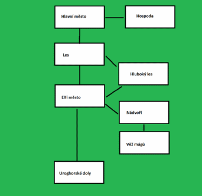

.12.2016
|
Hra začíná v hospodě hlavního města nejmenovaného herního světa, ve které náš hrdina zažívá zvláštní probuzení, když jej navštíví iluze jednoho z nejmocnějších čarodějů země, která mu sdělí, že jedině on může odvrátit zkázu v podobě nemrtvého čaroděje který terorizuje celý svět a že se má co nejdříve dostavit do nejvyššího elfského města kde se dozví více.
Úkolem hry tedy bude dostavit se za čarodějem který našemu hrdinovy dá kouzlo pomocí kterého může nemrtvého čaroděje porazit a zachránit tak svět. Důležité je promlouvat s postavami herního světa abychom se mohli dostat do dalších místností a v případě nebezpečných lokací musíme hlavní postavě obstarat zbraň, či jiné potřebné předměty k cestování.
Hru samotnou spouštíme z libovolného adresáře pomocí příkazu java -jar adventuraPP.jar
jdi – přecházení mezi prostory
seber – sebere předmět a vloží do inventáře
zahod – zahodí předmět, pokud je v inventáři
prozkoumej – dozví se více o předmětu
mluv – osloví vybranou postavu
batoh – vypíše obsah batohu
konec – ukončí hru
napoveda – zobrazí nápovědu ke hře
